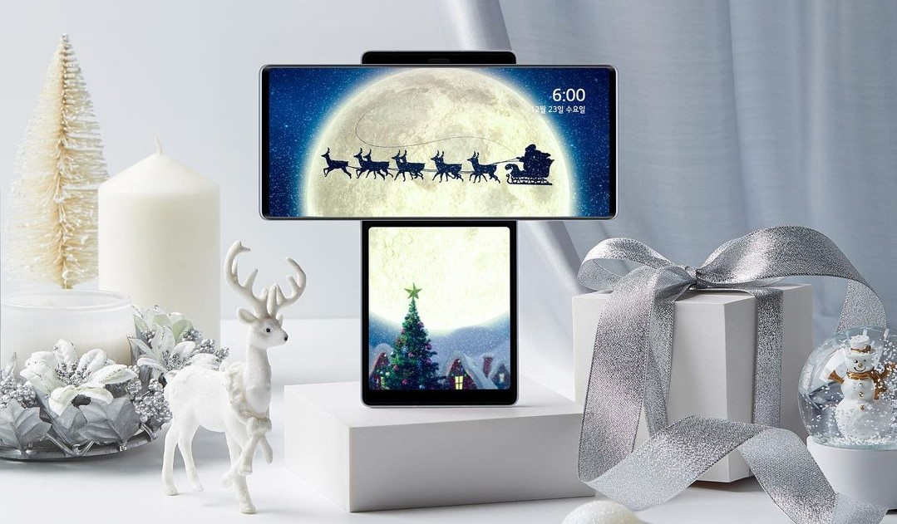
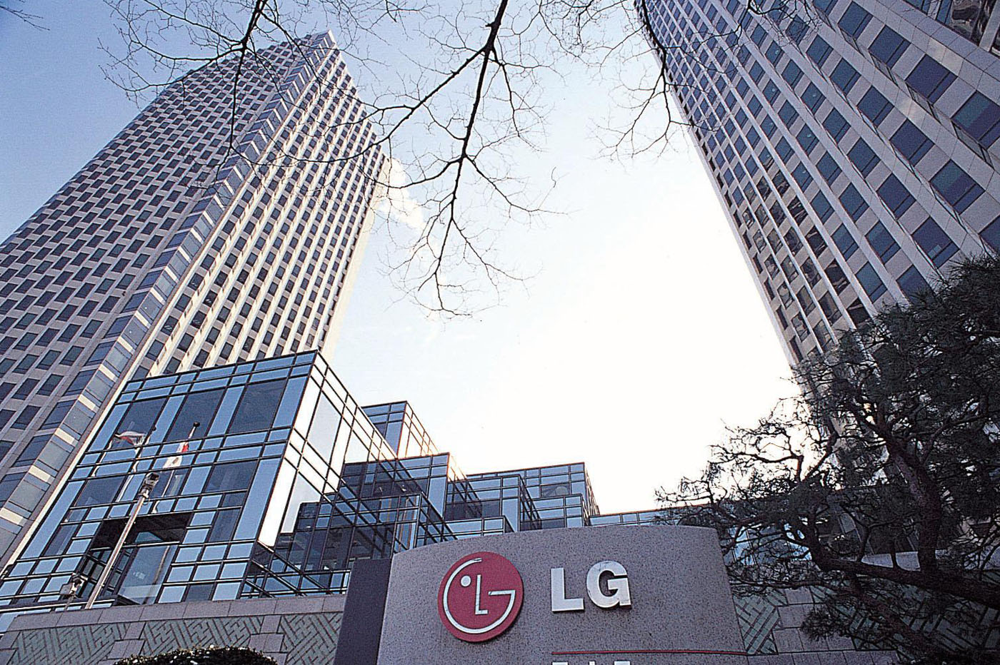

About LG Mobile
"Stay Connected -- Virtually Anywhere."

LG mobile devices feature innovative technology and
powerful operating systems that make it easy to talk, text, surf the web, access documents,
track your fitness, play your favourite games and watch videos no matter where you are.
Whether you want to upgrade your phone, get a new tablet or find a wearable device with everything you want --
our collection has you covered.
Mobile Phones: Whether you love the ease of a smartphone, the simplicity of a basic phone,
the efficiency of an Android phone, or want 4G or Quad-Core power, you'll find just what you need -- and want.
With sensitive touchscreens, effortless multitasking, intuitive controls, blazing-fast speeds, high-resolution cameras,
access to the latest apps and more, our mobile phones have available features that can not only help you connect,
but can help you manage your day and stay entertained.

Tablets: Our next-generation tablets put the latest technology in the palm of your hand. Boasting wide,
HD or higher resolution displays, rich colours and deep blacks, they're beautiful to view --
but their innovative features don't end there.
Designed to make multitasking a breeze, many can be easily paired with your smartphone,
so you can share information between devices, and work within two windows at once.
Plus with access to the newest apps, powerful processors, long-lasting batteries, and sophisticated security technology,
they make it easy to work or play on the go.
Smart Watches: Supremely portable, stylish and functional,
our innovative smart watches will not only help you stay on schedule, but can help streamline your life.
With built-in fitness trackers and navigation systems, plus the ability to set reminders or take notes, check the weather,
the stock market or your favourite social media sites, they're powerful mobile devices that will change the way you think of your watch.
Accessories: ition to state-of-the-art mobile devices, we also offer a full range of innovative mobile accessories that can help you get even more
from the technology you rely on. With sturdy docks and mounts, stylish cases and covers, comfortable headphones, watch bands,
chargers and more, you can make your device your own. Explore our complete collection and find everything you need to make life on the go good.